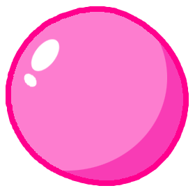

StickyGum.jsStickyGum is a JavaScript library for creating sticky sidebars. It keeps your sidebar visible while scrolling, stops it at the edges of its container, supports multiple sticky behaviors, and adapts to responsive layouts automatically. Works out of the box in modern browsers. Source can be found on GitHub.
Click the Scroll It! button to scroll each demo up and down. You can also open the demo in a new tab.
StickyGum supports multiple sidebars at once. This layout makes the left column, the middle content column and the right column all sticky, just pass an array of elements.
new StickyGum({
sidebar: [".leftSidebar", ".content", ".rightSidebar"],
container: "#wrapperThreeColumns",
offsetTop: 30
});StickyGum can handle even more sidebars at once - all four columns here are sticky and scroll independently within the shared container.
new StickyGum({
sidebar: ".column",
container: "#wrapperFourColumns",
offsetTop: 30,
minWidth: 1024
});